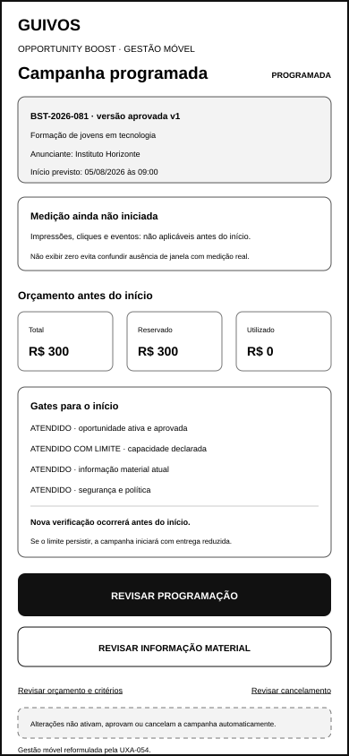
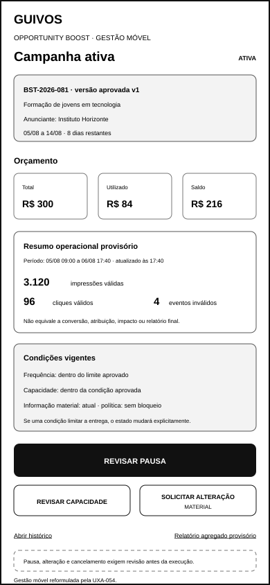
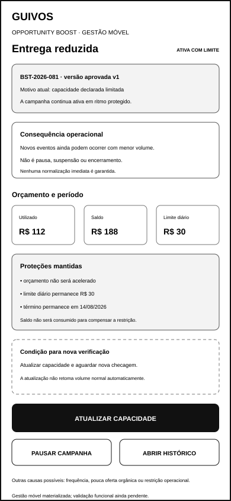
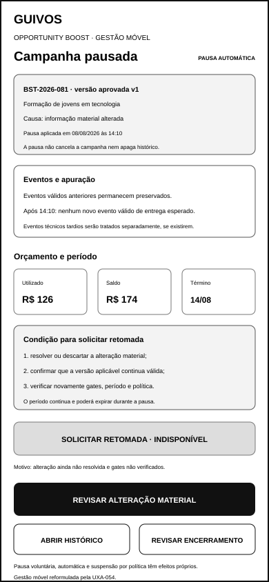
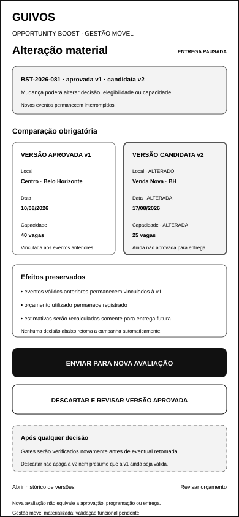
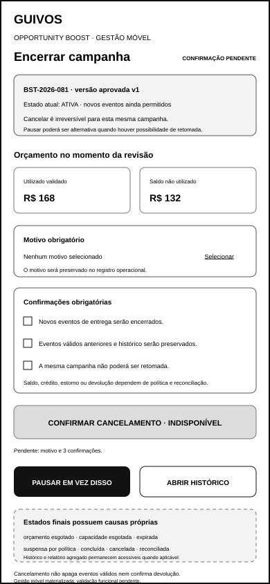

Wireframes de Baixa Fidelidade da Gestão Móvel da Campanha Ativa do Opportunity Boost¶
1. Finalidade¶
Este documento materializa em aplicativo móvel as seis responsabilidades de gestão posterior à aprovação do Opportunity Boost já validadas para computador pela UXA-046 reformulada e pela UXA-047.
O conjunto representa:
- campanha programada;
- campanha ativa;
- campanha ativa com entrega reduzida;
- campanha pausada;
- alteração material;
- encerramento e cancelamento.
A materialização não presume responsividade automática, equivalência visual ou implementação compartilhada com a referência para computador.
2. Estado de validação¶
A UXA-054 examinou os seis artefatos móveis e os considerou:
Funcionalmente válidos após reformulação.
As principais reformulações foram:
- substituir zero antes do início por medição ainda não iniciada;
- explicar que gate atendido com limite poderá iniciar a campanha em entrega reduzida;
- remover a contradição entre estado ativo normal e capacidade limitada;
- incluir causa, horário de verificação, orçamento total e período no estado limitado;
- registrar horário da pausa e distinguir evento válido de registro técnico tardio;
- converter a comparação material lateral em leitura vertical;
- tornar a versão aprovada somente leitura e a candidata explicitamente não aprovada;
- preservar orçamento e histórico junto da comparação;
- trocar ações imediatas por revisões antes de pausa, alteração ou cancelamento;
- uniformizar identidade da campanha, oportunidade, anunciante e versão.
Validação funcional não equivale a design visual final, acessibilidade técnica, protótipo, teste com usuários ou implementação.
3. Pergunta funcional do conjunto¶
Em tela móvel, o anunciante reconhece o estado atual antes de agir, distingue entrega normal, limitada e interrompida, compreende orçamento e período, preserva versões e eventos anteriores e executa somente ações compatíveis com retomada ou encerramento?
A UXA-054 responde positivamente após as reformulações registradas.
4. Canal e dimensão¶
- canal: aplicativo móvel;
- largura de referência: 390 pixels;
- altura de referência: 844 pixels;
- orientação: retrato;
- fidelidade: baixa;
- contexto: painel móvel de Organização ou Coletivo;
- estado: funcionalmente validado após reformulação.
5. Artefatos visuais reformulados¶
5.1 Campanha programada¶

docs/assets/wireframes/uxa-053-campaign-scheduled-mobile.svg
Demonstra:
- campanha aprovada e programada para data futura;
- identidade da oportunidade e do anunciante;
- versão aprovada identificada;
- medição ainda não iniciada, sem apresentar zero como dado apurado;
- orçamento total, reservado e utilizado;
- gates atendidos e atendidos com limite;
- início com entrega reduzida quando o limite persistir;
- nova verificação antes do início;
- alteração de programação, revisão material e cancelamento como revisões separadas.
Programação não representa garantia de início, entrega integral ou uso do orçamento.
5.2 Campanha ativa¶

docs/assets/wireframes/uxa-053-campaign-active-mobile.svg
Demonstra:
- entrega em andamento sem limitação operacional corrente;
- campanha, oportunidade, anunciante e versão aprovada persistentes;
- orçamento total, utilizado e saldo;
- período e tempo restante;
- indicadores operacionais provisórios com recorte e atualização;
- impressão, clique e evento inválido separados;
- frequência, capacidade, informação material e política dentro das condições vigentes;
- mudança explícita de estado quando surgir limitação;
- pausa, capacidade e alteração material como revisões distintas;
- histórico e relatório agregado provisório como superfícies separadas.
Indicador operacional não equivale a conversão, atribuição, impacto ou relatório final.
5.3 Campanha ativa com entrega reduzida¶

docs/assets/wireframes/uxa-053-campaign-limited-mobile.svg
Demonstra:
- campanha ainda ativa;
- entrega reduzida por capacidade no exemplo;
- causa e horário da última verificação;
- novos eventos ainda permitidos em ritmo protegido;
- distinção de pausa, suspensão e encerramento;
- orçamento total, utilizado, saldo, limite diário e período;
- ausência de aceleração do orçamento;
- ausência de ampliação automática do limite ou período;
- condição para nova verificação;
- ausência de normalização imediata garantida.
5.4 Campanha pausada¶

docs/assets/wireframes/uxa-053-campaign-paused-mobile.svg
Demonstra:
- pausa automática por alteração material;
- causa e horário de aplicação da pausa;
- interrupção de novos eventos válidos de entrega;
- tratamento separado para eventual registro técnico tardio;
- eventos válidos anteriores preservados;
- orçamento utilizado e saldo separados;
- período continuando e podendo expirar;
- condição explícita para solicitar retomada;
- controle de retomada visível e indisponível;
- pausa voluntária, automática e suspensão por política como estados distintos.
A pausa não promete crédito, devolução, reconciliação ou retomada automática.
5.5 Alteração material¶

docs/assets/wireframes/uxa-053-campaign-material-change-mobile.svg
Demonstra:
- versão aprovada e versão candidata em blocos verticais legíveis;
- versão aprovada em somente leitura;
- versão candidata explicitamente ainda não aprovada;
- campos alterados identificados por texto;
- entrega pausada antes de nova decisão;
- eventos anteriores vinculados à versão aprovada;
- orçamento utilizado e saldo preservados;
- estimativas futuras sujeitas a recálculo;
- revisão antes do envio para nova avaliação;
- descarte da candidata com revisão da versão aprovada;
- nova verificação dos gates antes de eventual retomada.
Nenhuma ação retoma a entrega automaticamente.
5.6 Encerramento e cancelamento¶

docs/assets/wireframes/uxa-053-campaign-closure-mobile.svg
Demonstra:
- campanha ainda ativa antes da confirmação completa;
- identidade da campanha, oportunidade e versão;
- horário de início da revisão de cancelamento;
- cancelamento irreversível para a mesma campanha;
- orçamento utilizado e saldo não utilizado separados;
- motivo obrigatório ainda não selecionado;
- três confirmações inicialmente vazias;
- botão de cancelamento indisponível;
- revisão de pausa como alternativa, sem execução imediata;
- eventos válidos e histórico preservados;
- estados finais com causas próprias;
- reconciliação e tratamento financeiro separados.
6. Continuidade da campanha¶
Os seis estados preservam:
- identificador
BST-2026-081; - oportunidade
Formação de jovens em tecnologia; - anunciante
Instituto Horizonte; - versão aprovada
v1; - orçamento total e limite diário;
- período aprovado;
- histórico das decisões;
- relação entre eventos válidos e versão correspondente.
Alteração material cria versão candidata e não reescreve eventos anteriores.
7. Autoridade dos estados¶
PROGRAMADA
→ aprovada, futura e ainda sem janela de medição
ATIVA
→ novos eventos permitidos dentro das condições vigentes
ATIVA COM LIMITE
→ novos eventos permitidos em ritmo protegido
PAUSADA
→ novos eventos válidos interrompidos; eventos anteriores preservados
ALTERAÇÃO MATERIAL
→ versão candidata em decisão; entrega futura bloqueada
CANCELAMENTO PENDENTE
→ campanha permanece no estado operacional anterior até o gate completo
Suspensão por política, orçamento esgotado, capacidade esgotada, oportunidade expirada, conclusão, cancelamento e reconciliação possuem motivos e consequências próprios.
8. Orçamento, saldo e período¶
A gestão móvel apresenta separadamente:
- orçamento total aprovado;
- orçamento reservado, antes do início;
- orçamento utilizado validado;
- saldo não utilizado;
- limite diário;
- período aprovado;
- tempo restante ou término;
- tratamento candidato do saldo após encerramento.
A interface não poderá:
- prometer uso integral do orçamento;
- acelerar gasto após limitação;
- ampliar limite diário ou período automaticamente;
- transformar saldo em devolução confirmada;
- cobrar simultaneamente CPM e CPC;
- apagar eventos válidos, inválidos ou histórico.
9. Indicadores, ausência e relatório¶
Antes do início:
- não existe janela operacional iniciada;
- impressão, clique e evento aparecem como não aplicáveis;
- zero não é utilizado para representar ausência de medição.
Durante a atividade, os indicadores operacionais provisórios apresentam:
- período de referência;
- horário de atualização;
- unidade de cada evento;
- aviso de que não constituem conversão, atribuição, impacto ou relatório final.
O relatório agregado permanece superfície separada, governada pela UXA-048 reformulada e pela UXA-049.
10. Limitação, pausa e retomada¶
A limitação:
- mantém a campanha ativa;
- reduz o ritmo de entrega;
- apresenta causa e verificação;
- preserva limite diário e período;
- não acelera orçamento;
- não promete normalização imediata.
A pausa:
- interrompe novos eventos válidos;
- preserva eventos válidos anteriores;
- preserva orçamento utilizado;
- mantém saldo separado;
- poderá permitir que o período continue;
- poderá terminar por expiração;
- não presume retomada automática;
- não define tratamento financeiro final.
A retomada somente poderá ser solicitada quando:
- a causa estiver resolvida;
- a versão aplicável estiver válida;
- os gates, o período e a política forem verificados novamente;
- não houver suspensão superior.
11. Alteração material¶
Mudança em preço, gratuidade, data, local, modalidade, responsável, elegibilidade, risco, capacidade ou condição comercial deverá:
- interromper entrega futura quando relevante;
- comparar versões em estrutura legível para móvel;
- manter a aprovada em somente leitura;
- preservar eventos anteriores;
- preservar orçamento utilizado;
- recalcular apenas estimativas futuras;
- exigir nova avaliação quando aplicável;
- impedir retomada automática após envio ou descarte.
12. Cancelamento e estados finais¶
Cancelamento exige:
- motivo obrigatório;
- confirmação de encerramento dos novos eventos;
- confirmação de preservação dos eventos válidos e histórico;
- confirmação de impossibilidade de retomada da mesma campanha.
Antes do gate completo, a campanha permanece no estado operacional anterior.
Revisar pausa não executa a pausa automaticamente. A alternativa somente será aplicável quando houver possibilidade de retomada futura.
Estados finais preservados:
- orçamento esgotado;
- capacidade esgotada;
- oportunidade expirada;
- suspensa por política;
- concluída;
- cancelada;
- reconciliada.
13. Critérios funcionais confirmados¶
Após a reformulação, o conjunto demonstra que:
- programação não equivale a atividade;
- ausência de janela de medição não é exibida como zero;
- gate limitado possui consequência explícita;
- estado ativo normal não apresenta limitação corrente;
- entrega reduzida permanece ativa e datada;
- orçamento total, utilizado, saldo, limite e período são distinguíveis;
- limitação não acelera orçamento nem amplia período;
- pausa possui causa e horário;
- novos eventos válidos são interrompidos sem apagar eventos anteriores;
- registros técnicos tardios não são confundidos com entrega válida;
- retomada permanece bloqueada até resolução e nova verificação;
- comparação de versões é legível em tela estreita;
- versão aprovada e candidata possuem autoridades distintas;
- envio e descarte não retomam entrega automaticamente;
- cancelamento exige motivo e confirmações independentes;
- revisão de pausa não executa ação imediata;
- histórico, relatório e reconciliação permanecem separados;
- nenhuma campanha, cobrança ou implementação real é criada.
14. Estado funcional¶
functionally_valid_after_reformulation — six mobile active-campaign management wireframes preserve campaign and version continuity, distinguish unstarted measurement, normal activity, reduced delivery and pause, expose budget and period, make version comparison readable and gate destructive actions without implying automatic execution.
15. Acessibilidade e linguagem¶
- estados são nomeados por texto;
- motivo, consequência e condição de ação aparecem juntos;
- valores possuem rótulo e unidade;
- indicadores possuem período e atualização;
- ausência de medição não é representada por zero;
- ação indisponível apresenta a causa;
- mudanças são identificadas por texto;
- versões são apresentadas em ordem vertical;
- confirmações começam vazias;
- ação destrutiva permanece bloqueada;
- nenhuma urgência, culpa ou escassez artificial é utilizada.
Esta validação não conclui acessibilidade técnica.
16. Proteções preservadas¶
- pagamento não compra relevância, confiança, qualidade ou impacto;
- nenhuma entrega antes de programação válida;
- nenhuma entrega com informação material desatualizada;
- limitação não acelera orçamento;
- pausa não apaga eventos válidos;
- alteração material não reescreve o passado;
- cancelamento não apaga histórico;
- saldo não é devolução confirmada;
- anunciante não recebe lista de visualizadores;
- nenhum perfil publicitário é criado;
- gestão móvel não autoriza campanha real, cobrança ou implementação.
17. Limites¶
Este incremento não cria:
- estados completos de erro técnico;
- experiência operacional de inventário insuficiente;
- experiência detalhada de preferência publicitária;
- nova validação transversal dos 36 wireframes;
- design visual final;
- responsividade implementada;
- acessibilidade técnica;
- protótipo navegável;
- teste com Organizações ou Coletivos;
- política final de frequência, cancelamento, devolução, crédito ou disputa;
- algoritmo, antifraude, checkout, cobrança, campanha real ou Engenharia de Produto.
18. Próximos atos governados¶
Após integração e nova autorização, poderão ocorrer separadamente:
- criar estados de erro, inventário insuficiente e preferência publicitária;
- validar transversalmente os 36 wireframes, se priorizado;
- definir protocolo de protótipo de baixa ou média fidelidade;
- preparar plano de teste com Organizações e Coletivos.
Nenhum ato é iniciado automaticamente.